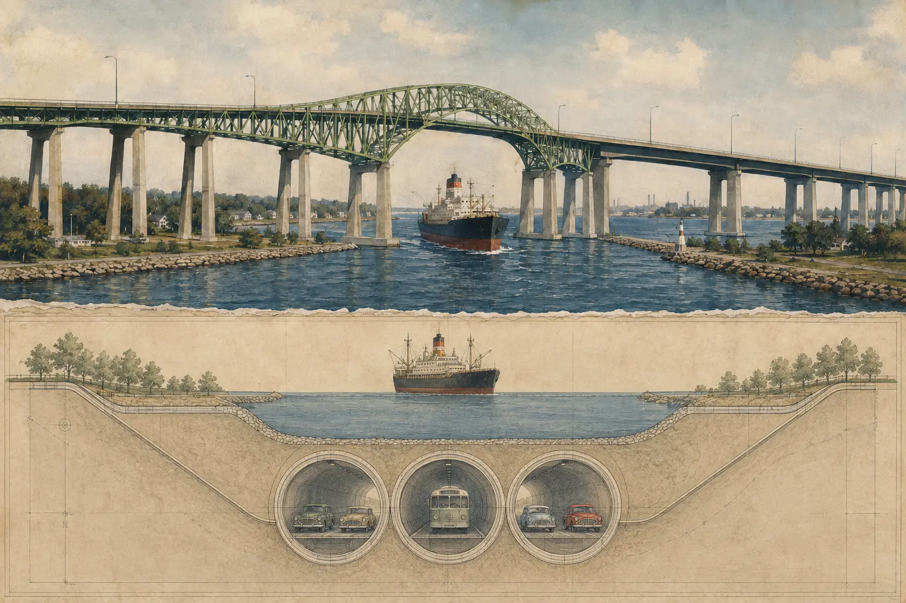

Fourteen minutes after Ontario opened the second Burlington Skyway, two cars driven by officials from the ceremony collided on it.
No one was seriously hurt. The timing is what made a minor collision memorable. The crossing had been debated for decades, forced into existence by one crash, redesigned because of traffic, and delayed by arguments over money, tolls and even its name. On Oct. 10, 1985, the province finally opened its answer. Fourteen minutes later, traffic had already found a way to interrupt the ceremony.
Today, the Skyway can feel inevitable: ten lanes of elevated highway carrying the QEW above the Burlington Canal. It was not. Ontario considered tearing the first bridge down. It studied a multi-lane tunnel. One plan called for three separate tunnels, including one reserved for buses. The province bought dozens of properties while deciding what to do.
The bridge Burlington knows was one outcome of a much stranger argument about how cars, ships and two growing cities could occupy the same narrow strip of land.
The ship that ended the debate
Before the Skyway, drivers crossed the canal on a low movable bridge. It carried the road across the shipping channel, then opened when vessels needed to pass. By the middle of the twentieth century, that arrangement had become a bottleneck inside an expanding provincial highway network.
Ontario officials had discussed a high-level crossing before the Second World War. Thomas Baker McQuesten, the Hamilton politician and highway builder, argued that a larger bridge belonged in the province’s transportation system. The war pushed the idea aside.
Then, on April 29, 1952, the W.E. Fitzgerald entered the canal carrying sand. The ship struck the north span of the bascule bridge and knocked it into the water. A road connection that had been inadequate was suddenly gone.
Hamilton absorbed the detour. Hundreds of thousands of vehicles were redirected through city streets while crews built a temporary replacement. That took roughly three and a half months. At busy points in summer, the old two-lane Beach Strip route had been carrying about 2,000 vehicles an hour.
The collision did not create the Skyway idea. It made continued delay harder to defend.
A bridge built around a ship channel
The structure had to solve two opposing problems. Highway traffic needed a fixed crossing that would not stop whenever a ship arrived. Marine traffic needed a clear path between Lake Ontario and Hamilton Harbour.
The answer was height. Federal navigation requirements helped push the bottom of the crossing more than 120 feet above the canal. Long approaches were needed to lift vehicles gradually to that level and bring them down again. What had begun as a bridge across a narrow channel became a steel structure more than a mile long.
When announced, the project was described as the largest pending steel construction job in Canada and possibly North America. The early estimate put the bridge at $13.3 million and the full project at $16 million. Ontario expected it to carry as many as 50,000 vehicles a day.
There was still no guarantee it would appear quickly. Burlington mayor Ted Smith had heard promises before. He said he would believe the province when construction actually started.
Work began in October 1954. Engineers bored into the shoreline to understand what could support the piers. Crews placed hundreds of thousands of cubic yards of fill. The design called for fluorescent lighting along the bridge, promoted at the time as an ultra-modern safety feature.
The construction record was not clean. A crane toppled into high-voltage wires. Another crane boom later crushed seven parked cars. An 18-year-old apprentice, Kenneth Austin, died after falling from the bridge. An overpass was discovered to slope in the wrong direction, adding $12,000 to the cost while the contractor said it had followed the government’s specifications.
The toll that moved the problem
The federal government withdrew financial support in 1956 after disputes over the project’s conditions. Ontario continued, but the decision made tolls more likely.
When the pale-green bridge opened on Oct. 30, 1958, Premier Leslie Frost led the first convoy across it. The completed structure measured 8,400 feet and used 17,500 tons of structural steel. Its central span stretched 495 feet over the canal.
Ten days later, toll collection began. A passenger car paid 15 cents in cash. A heavy truck paid 45 cents.
Beach residents had predicted what would happen next. Truck drivers could avoid the charge and the fuel needed to climb the bridge by staying on the lower road. An average of 40 heavy trucks an hour bypassed the Skyway during one measured period. The province had built an elevated highway to remove traffic from the Beach Strip, then priced some of the heaviest vehicles back onto it.
Toll revenue came in at roughly half the expected amount after the first year. Ontario reduced rates for heavy vehicles, Hamilton banned trucks from part of the Beach Strip, and the argument continued until the end of 1973.
At 11 p.m. on Dec. 28, the tolls ended. The final half-dozen drivers were simply waved through. The bridge had finally become part of Ontario’s toll-free highway system, but its next crisis was already visible in the traffic count.
The Skyway that almost became three tunnels

By 1972, traffic had doubled since the original bridge opened. Ontario presented three broad choices: demolish the Skyway and replace it with a tunnel, build another tunnel beside it, or twin the bridge.
A feasibility study went much further. It recommended widening the QEW and carrying highway traffic through three tunnels under the canal: one for northbound vehicles, one for southbound vehicles and one for buses. By January 1977, the province had purchased 84 properties for the possible work at a cost of $1.7 million.

- Tunnel portal: the 1982 concept sent highway traffic underground. It was never built.
- Original Skyway: the 1958 high-level span was still the only Skyway in the proposal image.
- Lift bridge: the separate low crossing still serves local traffic and opens for ships.
- Second span: Ontario chose to twin the Skyway; the new bridge opened in 1985.
- Approaches: the QEW was widened and Eastport Drive was added during the larger 1984-90 project.
- One plan proposed three separate tunnels.
- Ontario bought 84 properties while preparing for the corridor work.
- The environmental assessment found a tunnel more popular and safer.
- The tunnel was estimated to cost $20 million to $30 million more than a bridge.
The tunnel had an intuitive advantage. It could move highway traffic below the ship channel instead of forcing cars and trucks over a steep, exposed crossing. The environmental assessment found it more popular with the public and safer than another bridge.
It was also more expensive. The estimated difference,$20 million to $30 million,pushed the recommendation toward a new five-lane bridge west of the existing structure.
Even then, the decision nearly stalled. In May 1981, Ontario’s Ministry of the Environment said there was no need to twin the Skyway. Transportation minister James Snow said he was “totally frustrated.” Premier William Davis publicly backed twinning the following month, and cabinet approval arrived that fall.
Burlington, Halton, Hamilton and Hamilton-Wentworth eventually aligned behind the bridge. Soil testing began in 1982. Construction started in 1983.
The fight over one word
The engineering dispute was expensive. The naming dispute was personal.
Hamilton officials had resisted calling the first crossing the Burlington Skyway, especially after Burlington Beach became part of Hamilton. Burlington residents answered with a petition carrying 5,000 names. The bridge opened as the Burlington Bay Skyway.
The fight returned during the twinning project. In November 1984, Ontario announced that the combined crossing would be named for James N. Allan, the former highways minister who had led the original construction. Signs went up. The reaction was immediate enough that they came down within 24 hours.
This time, a petition defending the Burlington name collected 18,000 signatures. Cabinet settled on a compromise that contained both versions: Burlington Bay James N. Allan Skyway.
The name is long because the argument was never only about a bridge. It was about which city could claim the bay, whose history would be visible from the highway, and whether a provincial official could replace the place name residents already used.
The bridge that arrived early
The second Skyway used a balanced-cantilever construction method that had never been used in Ontario and had been used only three other times in Canada. It was the largest construction project the Ministry of Transportation had undertaken.
Unlike the first bridge, it moved faster than expected. By June 1985, work was a full year ahead of schedule. The final cost was $41.8 million.
On opening day that October, James N. Allan attended the ceremony on the structure that now carried his name. Fourteen minutes later came the fender bender between officials.
The accident is funny because nobody was seriously hurt. It is memorable because it compresses the entire Skyway story into one moment. Burlington’s crossing has always promised to solve movement. Every version has also revealed how difficult movement is to control.
A ship forced the first bridge into reality. Tolls sent trucks around it. Traffic nearly sent the next crossing underground. Politics put Burlington back into its name. And the bridge that finally opened early took less than a quarter of an hour to produce its first collision.
Sources and reporting notes
- Library and Archives Canada web archive: Cultural Landmarks of Hamilton-Wentworth, Burlington Bay James N. Allan Skyway. This chronology cites Hamilton Public Library’s Burlington Bay Skyway Bridge scrapbooks and Ontario Department of Highways publications from 1958 and 1960.
- Digital Archive Ontario: January 1982 Toronto Star tunnel-concept rendering and catalogue record
- HistoricBridges.org: Burlington Skyway dimensions and structural profile
- Transport Canada: Burlington Canal Lift Bridge and canal operations
- Wikimedia Commons: Burlington Bay James N. Allan Skyway image collection
This feature paraphrases the archival chronology. Short quoted phrases are attributed in the text; no scene or dialogue has been invented. Both tunnel visuals are labelled interpretations of documented alternatives, not recovered engineering drawings. The copyrighted Toronto Star rendering was used only as a geometry reference and is not reproduced.